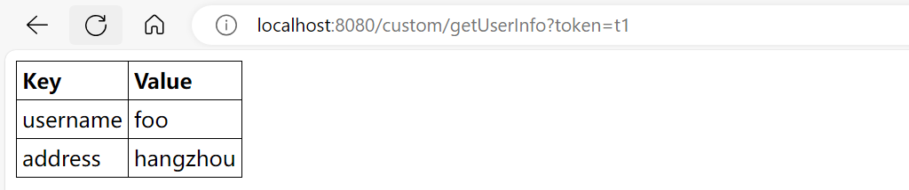

Spring MVC是如何分发HTTP请求的？
1. 背景
得益于Spring框架的封装，我们只需要简单的几行代码便可创建一个HTTP服务，如下代码：
@SpringBootApplication
@RestController
public class DemoApplication {
public static void main(String[] args) {
SpringApplication.run(DemoApplication.class, args);
}
@GetMapping("/hello")
public String hello(@RequestParam(value = "name", defaultValue = "World") String name) {
return String.format("Hello %s!", name);
}
}当我们发送相应的HTTP请求后，会执行DemoApplication#hello方法，最后会返回HTTP响应。下文将解读Spring MVC是如何分发HTTP请求的。
$ curl http://localhost:8080/hello?name=foo
$ Hello foo!2. Spring MVC是如何分发HTTP请求的？
当Web服务器接收到请求时，会将请求转发给Servlet容器进行处理，其核心方法为Servlet#service，该方法接收两个参数分别是ServletRequest和ServletResponse。接口定义如下：
public interface Servlet {
public void service(ServletRequest req, ServletResponse res);
}Spring MVC中提供的Servlet容器是DispatcherServlet，其核心方法为DispatcherServlet#doDispatch，该方法接收两个参数分别是HttpServletRequest和HttpServletResponse。继承体系如下：

所有的请求都会经过DispatcherServlet#doDispatch方法进行分发，处理流程如下图：

2.1. 获取给定请求的处理器执行链
Spring MVC抽象出了处理器映射HandleMapping接口，其getHandler方法用来获取当前请求的处理器执行链HandlerExecutionChain。处理器执行链维护了当前请求的处理器和处理器拦截器HandlerInterceptor列表。为支持多种处理器映射，DispatcherServlet中维护了一个处理器映射列表，会遍历该列表找到当前请求对应的处理器执行链。

对应源码所在位置：
DispatcherServlet#getHandler。
2.2. 获取给定处理器的处理器适配器
Spring MVC抽象出了处理器适配器HandlerAdapter接口，其supports方法用来判断该处理器适配器是否支持当前处理器。为支持多种处理器适配器，DispatcherServlet中维护了一个处理器适配器列表，会遍历该列表找到当前处理器对应的处理器适配器。

对应源码所在位置：
DispatcherServlet#getHandlerAdapter。
2.3. 拦截器前置处理
执行处理器执行链HandlerExecutionChain的前置处理方法applyPreHandle，本质上是依次调用其内部维护的HandlerInterceptor列表中元素的preHandle方法。

对应源码所在位置：
HandlerExecutionChain#applyPreHandle。
2.4. 处理器适配器处理给定的请求和处理器
执行处理器适配器HandlerAdapter的handle方法，使用给定的处理器来处理给定的请求，并返回ModelAndView。
对应源码所在位置：
HandlerAdapter#handle。
2.5. 应用默认视图名称
如果上一步返回了ModelAndView，但没有视图，则根据HTTP请求设置默认的视图名称。
对应源码所在位置：
DispatcherServlet#applyDefaultViewName。
2.6. 拦截器后置处理
执行处理器执行链HandlerExecutionChain的后置处理方法applyPostHandle，本质上是依次调用其内部维护的HandlerInterceptor列表中元素的postHandle方法。

对应源码所在位置：
HandlerExecutionChain#applyPostHandle。
2.7. 处理分发结果
如果存在异常，则进行异常处理；如果存在视图，则进行视图的渲染；最后，执行处理器执行链HandlerExecutionChain的完成处理方法triggerAfterCompletion，本质上是依次调用其内部维护的HandlerInterceptor列表中元素的afterCompletion方法。
对应源码所在位置：
DispatcherServlet#processDispatchResult。
3. @Controller和@RequestMapping是如何工作的？
上文我们从整体上讲解了Spring MVC是如何分发HTTP请求的，但并未讲解处理器映射HandlerMapping和处理器适配器HandlerAdapter是如何实现的。下面我们将讲解HTTP请求是如何映射到标注了@Controller注解的Bean中标注了@RequestMapping注解的方法上的。
3.1. 初始化处理器方法
Spring MVC注册了一个Bean为RequestMappingHandlerMapping，其初始化时会初始化处理器方法。具体步骤如下：
3.1.1. 找到给定Bean的处理器和方法
对于标注了@Controller注解的Bean，找到标注了@RequestMapping注解的方法，并构建RequestMappingInfo。
对应源码所在位置：
AbstractHandlerMethodMapping#initHandlerMethods。
3.1.2. 创建并注册处理器方法
- 创建处理器方法
HanlderMethod； - 建立路径和
RequestMappingInfo的映射； - 建立名称和
HandlerMethod的映射； - 建立
HandlerMethod和CorsConfiguration的映射； - 建立
RequestMappingInfo和MappingRegistration的映射。

对应源码所在位置：
AbstractHandlerMethodMapping#registerHandlerMethod。
3.2. 获取给定请求的处理器方法
- 根据给定的请求获取路径；
- 根据路径获取
RequestMappingInfo列表，并过滤同给定的请求所匹配的； - 如果上一步未匹配到，则遍历所有的
RequestMappingInfo，并过滤同给定的请求所匹配的； - 如果同给定的请求所匹配的结果有多个，则进行排序以选择最佳匹配的结果；
- 返回最佳匹配结果的处理器方法
HandlerMethod。
对应源码所在位置：
AbstractHandlerMethodMapping#lookupHandlerMethod。
3.3. 处理器适配器处理给定的请求和处理器

对应源码所在位置：
RequestMappingHandlerAdapter#handleInternal。
3.3.1. 创建ServletInvocableHandlerMethod
根据处理器方法HandlerMethod创建ServletInvocableHandlerMethod，并设置处理器方法参数解析器HandlerMethodArgumentResolverComposite和处理器方法返回值处理器HandlerMethodReturnValueHandlerComposite。
对应源码所在位置：
RequestMappingHandlerAdapter#createInvocableHandlerMethod。
3.3.2. 处理器方法参数解析器解析参数
调用处理器方法参数解析器HandlerMethodArgumentResolverComposite的resolveArgument方法来解析参数，本质上是调用了HandlerMethodArgumentResolver#resolveArgument方法来得到解析后的参数。
对应源码所在位置：
HandlerMethodArgumentResolverComposite#resolveArgument。
3.3.3. 反射调用处理器的方法
通过反射调用处理器的方法。
对应源码所在位置：
InvocableHandlerMethod#doInvoke。
3.3.4. 处理器方法返回值处理器处理返回值
调用处理器方法返回值处理器HandlerMethodReturnValueHandlerComposite的handleReturnValue方法来处理返回值，本质上是调用了HandlerMethodReturnValueHandler#handleReturnValue方法来得到处理后的返回值。
对应源码所在位置：
HandlerMethodReturnValueHandlerComposite#handleReturnValue。
4. @RequestBody和@ResponseBody是如何工作的？
上文我们从整体上讲解了处理器适配器是如何处理请求的，但并未讲解处理器方法参数解析器HandlerMethodArgumentResolver和处理器方法返回值处理器HandlerMethodReturnValueHandler是如何实现的。下面我们将讲解标注了@RequestBody注解的参数是如何解析的，以及标注了@ResponseBody注解的返回值是如何处理的。
4.1. @RequestBody参数解析
@RequestBody注解的处理器方法参数解析器是RequestResponseBodyMethodProcessor。本质上是从HTTP请求读取内容并转为对象。
对应源码所在位置：
RequestResponseBodyMethodProcessor#resolveArgument。
4.2. @ResponseBody返回值处理
@RequestBody注解的处理器方法返回值处理器是RequestResponseBodyMethodProcessor。本质上是将对象转为内容并写入HTTP响应。
对应源码所在位置：
RequestResponseBodyMethodProcessor#handleReturnValue。
5. 实战
5.1. 如何打印每个请求的执行时间？
我们希望在每次处理请求后，都打印请求的耗时时间的。首先定义一个拦截器CostTimeHandlerInterceptor，在preHandle方法中记录起始时间，在afterCompletion方法中记录结束时间并打印。代码如下：
package com.remeio.upsnippet.spring.mvc.custom;
import lombok.extern.slf4j.Slf4j;
import org.springframework.web.servlet.HandlerInterceptor;
import javax.servlet.http.HttpServletRequest;
import javax.servlet.http.HttpServletResponse;
@Slf4j
public class CostTimeHandlerInterceptor implements HandlerInterceptor {
ThreadLocal<Long> requestTimeMillis = new ThreadLocal<>();
@Override
public boolean preHandle(HttpServletRequest request, HttpServletResponse response, Object handler) throws Exception {
requestTimeMillis.set(System.currentTimeMillis());
return true;
}
@Override
public void afterCompletion(HttpServletRequest request, HttpServletResponse response, Object handler, Exception ex) throws Exception {
final Long lastTimeMillis = requestTimeMillis.get();
requestTimeMillis.remove();
if (lastTimeMillis == null) {
return;
}
long costTimeMillis = System.currentTimeMillis() - lastTimeMillis;
log.info("Request '{}' costs {} millis", request.getServletPath(), costTimeMillis);
}
}在CustomWebMvcConfigurer中配置拦截器，拦截所有路径。代码如下：
package com.remeio.upsnippet.spring.mvc.custom;
import lombok.extern.slf4j.Slf4j;
import org.springframework.context.annotation.Configuration;
import org.springframework.web.servlet.config.annotation.InterceptorRegistry;
import org.springframework.web.servlet.config.annotation.WebMvcConfigurer;
import java.util.List;
@Slf4j
@Configuration
public class CustomWebMvcConfigurer implements WebMvcConfigurer {
@Override
public void addInterceptors(InterceptorRegistry registry) {
registry.addInterceptor(new CostTimeHandlerInterceptor())
.addPathPatterns("/**");
}
}执行请求后，打印信息如下：
Request '/custom/getUserInfo' costs 4 millis5.2. 如何实现根据token获取用户信息？
我们希望在标注了@RequestUser注解的参数上设置用户信息。首先定义一个处理器方法参数解析器RequestUserMethodArgumentResolver，代码如下：
package com.remeio.upsnippet.spring.mvc.custom;
import com.google.common.collect.ImmutableMap;
import com.remeio.upsnippet.spring.mvc.domain.User;
import org.springframework.core.MethodParameter;
import org.springframework.web.bind.support.WebDataBinderFactory;
import org.springframework.web.context.request.NativeWebRequest;
import org.springframework.web.method.support.HandlerMethodArgumentResolver;
import org.springframework.web.method.support.ModelAndViewContainer;
import java.util.Map;
public class RequestUserMethodArgumentResolver implements HandlerMethodArgumentResolver {
@Override
public boolean supportsParameter(MethodParameter parameter) {
RequestUser ann = parameter.getParameterAnnotation(RequestUser.class);
return (ann != null && User.class.isAssignableFrom(parameter.getParameterType()));
}
@Override
public Object resolveArgument(MethodParameter parameter,
ModelAndViewContainer mavContainer,
NativeWebRequest webRequest,
WebDataBinderFactory binderFactory) {
final String token = webRequest.getParameter("token");
return getUserByToken(token);
}
private User getUserByToken(final String token) {
// get user by token from database or cache
return userDao.get(token);
}
private final Map<String, User> userDao = ImmutableMap.of(
"t1", User.builder().username("foo").address("hangzhou").build(),
"t2", User.builder().username("bar").address("shanghai").build());
}
在CustomWebMvcConfigurer中该处理器方法参数解析器。代码如下：
package com.remeio.upsnippet.spring.mvc.custom;
import lombok.extern.slf4j.Slf4j;
import org.springframework.context.annotation.Configuration;
import org.springframework.web.method.support.HandlerMethodArgumentResolver;
import org.springframework.web.servlet.config.annotation.WebMvcConfigurer;
import java.util.List;
@Slf4j
@Configuration
public class CustomWebMvcConfigurer implements WebMvcConfigurer {
@Override
public void addArgumentResolvers(List<HandlerMethodArgumentResolver> resolvers) {
resolvers.add(new RequestUserMethodArgumentResolver());
}
}
业务代码如下：
import com.remeio.upsnippet.spring.mvc.custom.RequestUser;
import com.remeio.upsnippet.spring.mvc.custom.ResponseVisualization;
import com.remeio.upsnippet.spring.mvc.domain.User;
import lombok.extern.slf4j.Slf4j;
import org.springframework.stereotype.Controller;
import org.springframework.web.bind.annotation.GetMapping;
import org.springframework.web.bind.annotation.RequestMapping;
@Slf4j
@Controller
@RequestMapping("/custom")
public class CustomController {
@ResponseVisualization
@GetMapping("/getUserInfo")
public User getUserInfo(@RequestUser User user) {
log.info("Current user: {}", user);
return user;
}
}5.3. 如何实现响应信息的可视化？
我们希望在标注了@ResponseVisualization注解的方法上返回可视化的信息。首先定义一个处理器方法返回值处理器ResponseVisualizationReturnValueHandler，代码如下：
import org.springframework.core.MethodParameter;
import org.springframework.core.annotation.AnnotatedElementUtils;
import org.springframework.http.server.ServletServerHttpResponse;
import org.springframework.util.Assert;
import org.springframework.util.StreamUtils;
import org.springframework.web.context.request.NativeWebRequest;
import org.springframework.web.method.support.HandlerMethodReturnValueHandler;
import org.springframework.web.method.support.ModelAndViewContainer;
import javax.servlet.http.HttpServletResponse;
import java.lang.reflect.Field;
import java.nio.charset.StandardCharsets;
import java.util.HashMap;
import java.util.Map;
import java.util.Objects;
public class ResponseVisualizationReturnValueHandler implements HandlerMethodReturnValueHandler {
@Override
public boolean supportsReturnType(MethodParameter returnType) {
return (AnnotatedElementUtils.hasAnnotation(returnType.getContainingClass(), ResponseVisualization.class) ||
returnType.hasMethodAnnotation(ResponseVisualization.class));
}
@Override
public void handleReturnValue(Object returnValue, MethodParameter returnType, ModelAndViewContainer mavContainer, NativeWebRequest webRequest) throws Exception {
ServletServerHttpResponse response = createOutputMessage(webRequest);
final String content = buildHtml(returnValue != null ? toMap(returnValue) : new HashMap<>(0));
StreamUtils.copy(content, StandardCharsets.UTF_8, response.getBody());
}
protected ServletServerHttpResponse createOutputMessage(NativeWebRequest webRequest) {
HttpServletResponse response = webRequest.getNativeResponse(HttpServletResponse.class);
Assert.state(response != null, "No HttpServletResponse");
return new ServletServerHttpResponse(response);
}
private static Map<String, String> toMap(Object obj) throws IllegalAccessException {
final Map<String, String> fieldValues = new HashMap<>(obj.getClass().getDeclaredFields().length);
for (Field field : obj.getClass().getDeclaredFields()) {
field.setAccessible(true);
fieldValues.put(field.getName(), Objects.toString(field.get(obj)));
}
return fieldValues;
}
private static String buildHtml(Map<String, String> map) {
final String title = "<tr><th>Key</th><th>Value</th></tr>";
StringBuilder content = new StringBuilder();
for (Map.Entry<String, String> entry : map.entrySet()) {
content.append("<tr><td>")
.append(entry.getKey())
.append("</td><td>")
.append(entry.getValue())
.append("</td></tr>");
}
return "<html>" +
"<style>table,th,td { border:1px solid black; border-collapse:collapse; padding: 4px; text-align: left;} </style>" +
"<body>" +
"<table>" + title + content + "</table>" +
"</body>" +
"</html>";
}
}
在CustomWebMvcConfigurer中该处理器方法返回值处理器。代码如下：
import lombok.extern.slf4j.Slf4j;
import org.springframework.context.annotation.Configuration;
import org.springframework.web.method.support.HandlerMethodReturnValueHandler;
import org.springframework.web.servlet.config.annotation.WebMvcConfigurer;
import java.util.List;
@Slf4j
@Configuration
public class CustomWebMvcConfigurer implements WebMvcConfigurer {
@Override
public void addReturnValueHandlers(List<HandlerMethodReturnValueHandler> handlers) {
handlers.add(new ResponseVisualizationReturnValueHandler());
}
}业务代码如下：
import com.remeio.upsnippet.spring.mvc.custom.RequestUser;
import com.remeio.upsnippet.spring.mvc.custom.ResponseVisualization;
import com.remeio.upsnippet.spring.mvc.domain.User;
import lombok.extern.slf4j.Slf4j;
import org.springframework.stereotype.Controller;
import org.springframework.web.bind.annotation.GetMapping;
import org.springframework.web.bind.annotation.RequestMapping;
@Slf4j
@Controller
@RequestMapping("/custom")
public class CustomController {
@ResponseVisualization
@GetMapping("/getUserInfo")
public User getUserInfo(@RequestUser User user) {
log.info("Current user: {}", user);
return user;
}
}运行结果如下：
{kind=link}
目录